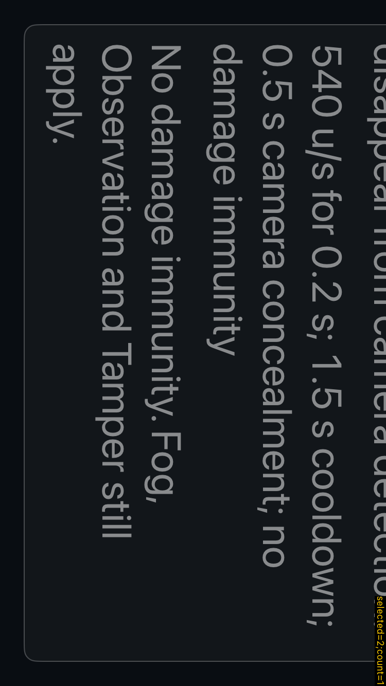
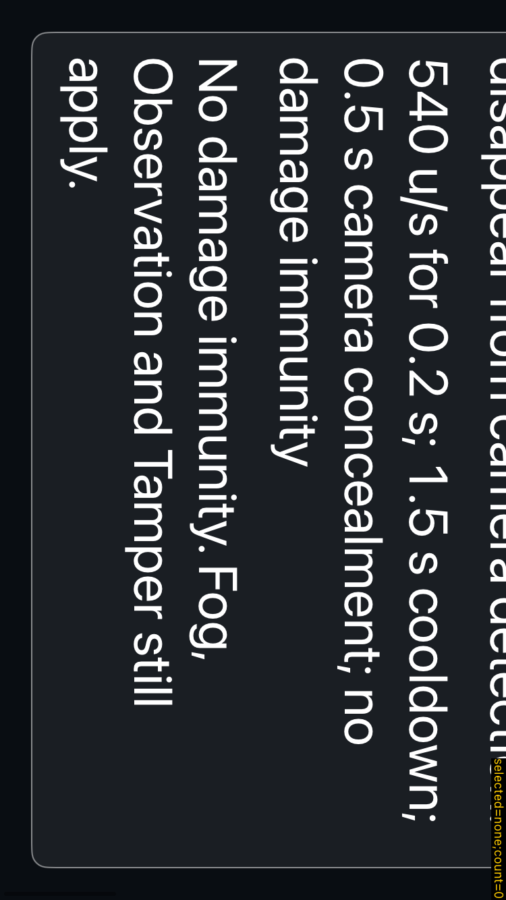
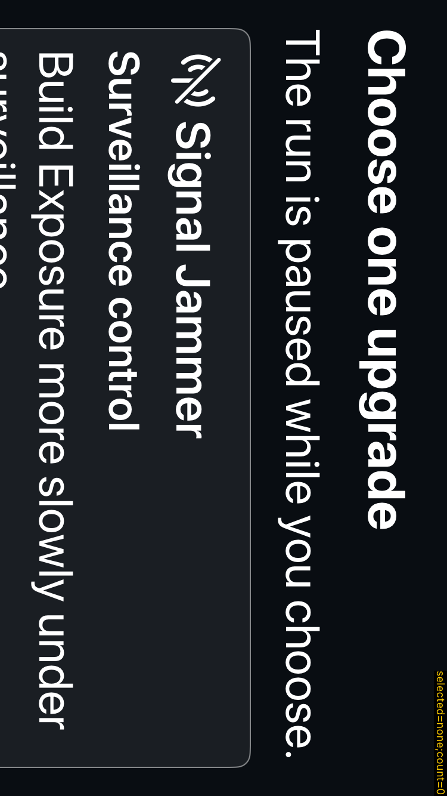
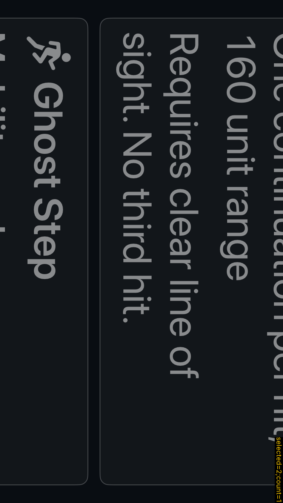
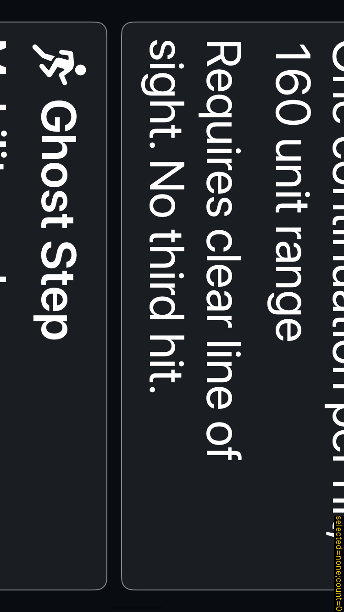
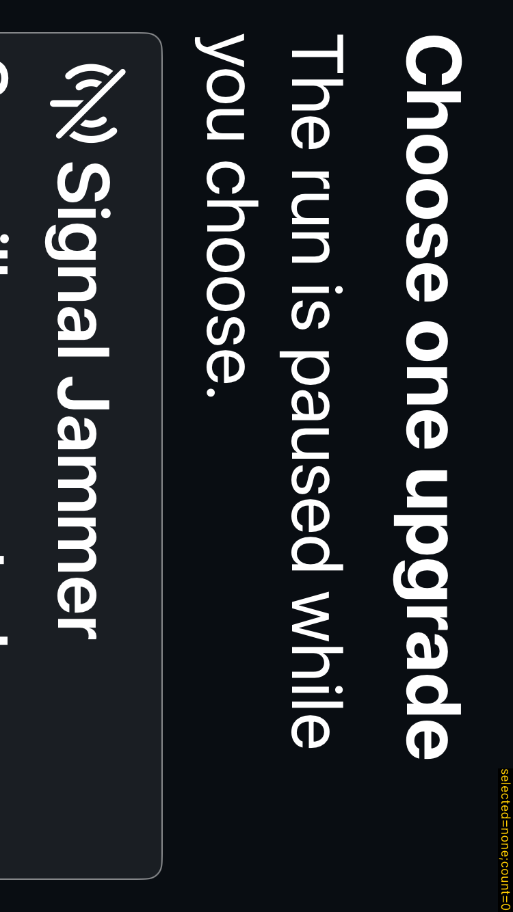

Three passing XCUI tests on SE3 simulator. Unmodified production view in isolated host. Not physical VoiceOver, full-game resume, or visual acceptance. Screen captures honor original EXIF orientation. Initial cropped window-capture attempt retained separately.
--accessibility3
2 actual swipes. selected=2;count=1. AX label: Ghost Step. Mobility and surveillance evasion. Dodge speed five hundred forty units per second for zero point two seconds, one point five second cooldown, camera concealment for thirty ticks including dodge start, zero point five seconds. No damage immunity. Fog, Observation and Tamper still apply.
selected

reachable

before

--accessibility5
2 actual swipes. selected=2;count=1. AX label: Ghost Step. Mobility and surveillance evasion. Dodge speed five hundred forty units per second for zero point two seconds, one point five second cooldown, camera concealment for thirty ticks including dodge start, zero point five seconds. No damage immunity. Fog, Observation and Tamper still apply.
selected

reachable

before

default-large
0 actual swipes. selected=0;count=1. AX label: Signal Jammer. Surveillance control. Reduces camera contact gain by one point per tick, minimum one. Reduces fog and boss observation pulses by twenty-five percent. No Tamper or damage reduction.